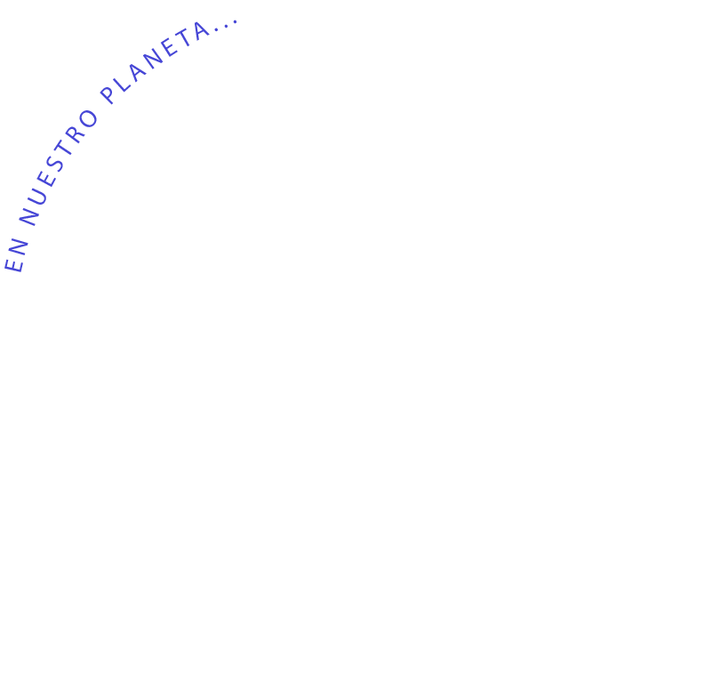
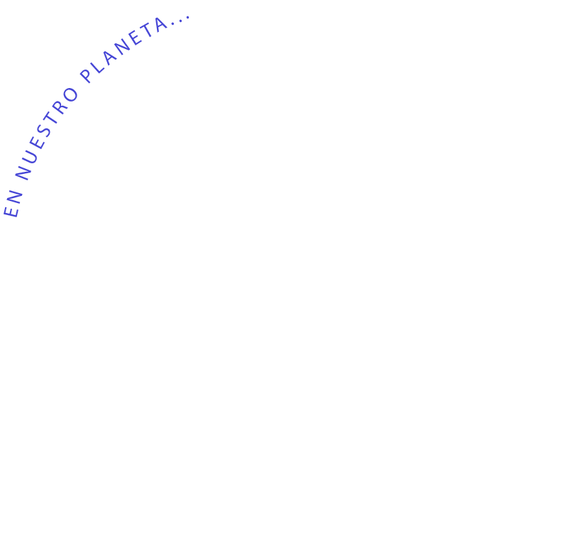

¿Sabes cómo afecta el fast fashion a nuestro planeta?
Por: Aremi Manrique y Laboratorio de Visualización de Datos
2024


 

El 70%
de la superficie está cubierta de agua


97.5%
corresponde a agua salada
Solo
2.5%
es agua dulce


El
65%
Se encuentra en glaciares, cimas nevadas y permahielo
El
30.1%
en aguas subterráneas
únicamente el
0.4%
está disponible para consumo humano


De esta mínima cantidad de agua disponible en nuestro planeta
El
20%
son aguas residuales de la industria textil
Este es el inicio...
del impacto de los productos que consumimos
Nuestra huella ecológica se relaciona directamente con la huella ecólogica de dichos productos. Para comprenderla, debemos considerar los múltiples impactos que tienen a lo largo de su ciclo de vida.

Para realmente comprender el impacto ambiental y social que tiene cada prenda, hemos analizado cada etapa de su ciclo de vida.
Veamos los descubrimientos
Producción de fibra
Para realmente comprender el impacto ambiental y social que tiene cada prenda, hemos analizado cada etapa de su ciclo de vida
Veamos los descubrimientos
IRProducción de fibra
El comportamiento ambiental y social de las diferentes materias primas utilizadas en la moda depende de cada tipo de material, cómo surge y qué procesos sigue hasta convertirse en fibra preparada para hilar. Es por eso que generalizamos.
Esta etapa te invita a pensar acerca de cómo los niveles de producción de la fibras han aumentaso así como en los diferentes impactos que existen.


Ha llegado el momento...
Las fibras se clasifican según su origenes como fibras artificiales, fibras sinteticas y fibras naturales.
En esta visualización muestra su producción.
Las fibras artificiales han tenido un incremento considerable hasta el 2021 en contraposición con las naturales.
Esta demanda de producción es debido a que al diseñar ropa la elección de cada fibra se piensa más en la funcionalidad y estética. Para ahondar en sus diversos impactos se realizo el siguiente análisis.
Fibras artificiales
Fibras naturales
en 1.000 toneladas métricas
Como lo notas, es necesario tomar en cuenta qué tipo de material utilizaremos

Producción de fibra
Impacto ambiental
Fibras artificiales

54 M
Poliester
27 M
Algodón
7 M
Celulosas

6.1 M
Poliamida


Fibras naturales

1.2 M
Lana

0.09 M
Cañamo
Consumo de energía
(kWh por kg de fibra)

Consumo de agua
(litro por kg)
Emisiones de CO2
(kg por kg de fibra)
Como lo notas es necesario tomar en cuenta qué tipo de material utilizaremos o eligiremos ya que tendrá consecuencias en nuestro planeta, pero no hay que olvidar que ninguna fibra, es la solución al impacto de la industria tan intensiva.
Es necesario atender diversos impactos que se producen a lo largo de todo el ciclo de vida de un producto como lo veremos en las siguientes etapas.


Es por eso que es necesario
Pensar en cómo diseñar para disminuir los impactos
La variedad de materiales tiene que ver en la forma que se diseña, es por eso qeu te mostramos una forma de hacer tus prendas para ...
¿Qué hace a una
prenda sustentable?
Hecha con materiales de calidad y fabricación duradera
Estas dos características influirán en la durabilidad física y visual de la prenda, lo cuál implicará una necesidad menor de nuevas adquisiciones.

¿Cómo saber si mi prenda es de buena calidad?

Las costuras son rectas, cortas y uniformes.

Los tejidos están hechos de fibras que son cómodos de usar.
La prenda ajusta perfecto a tu cuerpo, no se jala ni está chueca.
Modificable o multifuncional
De esta manera se solventarán problemas como las modas o los cambios corporales, promoviendo así una vida más larga del producto

Ventajas de tener una prenda modificable

Una misma prenda permite crear diferentes looks

Ahorran el espacio que podrían utilizar 4 diferentes prendas en una maleta/guardarropa
Se pueden adaptar a diferentes situaciones y/o necesidades

Con pocos materiales y furnituras
Esto reducirá significativamente la cantidad de productos químicos contaminantes
¿Cuánto tiempo tardan en degradarse los materiales?

La que conecta con el usuario
Promover un mayor compromiso entre el consumidor alargará la vida de la prenda y reducirá el consumo de fast-fashion.
¿Cuántos años mínimo se debe usar una prenda para que sea sustentable?

Responsable socialmente
Tener en cuenta el bienestar de los artesanos, agricultores y otros involucrados, fomentará una cultura de moda ética.

¿Cuál es el salario de los artesanos en México?
Salario mensual en pesos mexicanos
4k-5k
5k-6k
7k-8k
+9k
*Datos al segundo trimestre del 2023
Sin residuos
Reducir el desperdicio hasta eliminarlo completamente.

¿Qué hacer con el sobrante de tela?
Upcycling
Crear nuevas prendas con ayuda de telas recicladas
Patchwork
Unir retazos de tela para formar una pieza más grande
Objetos de uso cotidiano
Por ejemplo: elementos decorativos, material interactivo, productos para el hogar, etc.
Etiquetado
Informar al usuario promoverá comportamientos más sostenibles e incentivará al consumidor a alargar la vida del producto.
¿Qué significan los íconos en las etiquetas?